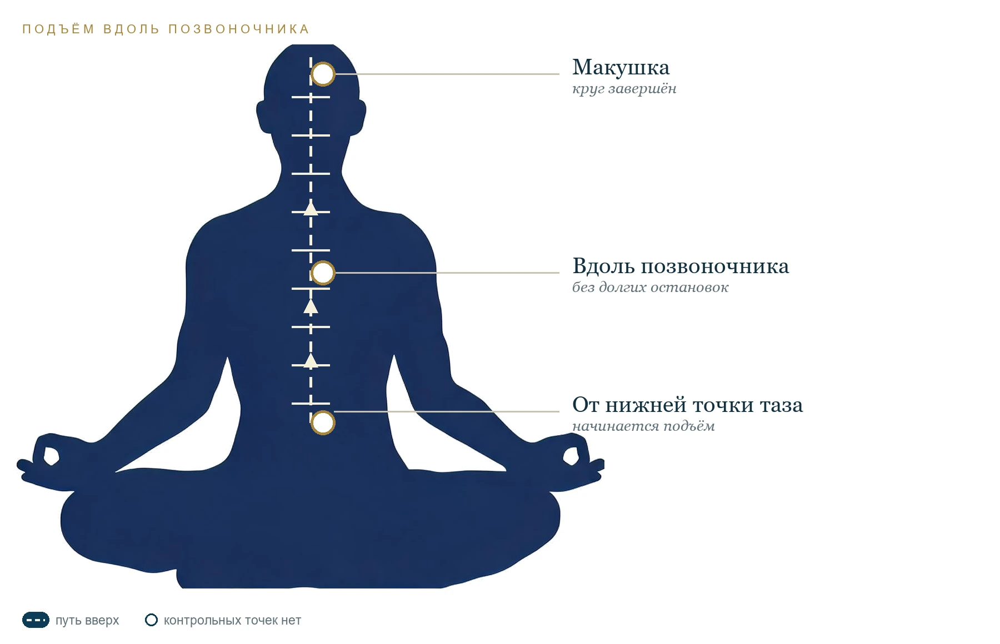

Practice
Your calm mind
Meditations, breathing techniques and other practices for calm.
The full instruction: how to choose a mantra, carry it around the body and settle into inner silence.
About the concept
What this practice is
Neo Orbital Meditation is aimed at deeply calming mental activity, reducing inner dialogue and reaching a state of inner silence.
Unlike classical concentration practices such as shamatha, where the task is to hold attention on a single object, this technique works differently: a mentally repeated mantra is moved step by step along a set path through the body.
The core idea is to gradually shift attention from the habitual flow of thoughts to the repetition of a neutral word, and then carry that repetition through specific points of the body.
According to practitioners, this may come with
- a marked decrease in the number of thoughts;
- a weakening or a complete stop of inner dialogue;
- a feeling of inner silence;
- a sense of fullness, warmth or movement of energy in the body;
- a state of deep relaxation and a kind of mental reset.
Pace and frequency
How long and how often
The practice differs from gentler techniques such as breath observation or ordinary relaxation. It calls for intense concentration and may feel deeper.
So there is no need to practise as often as possible or to lengthen the sessions.
- 20 minutessession length
- up to 2 timesa day
- morning and eveningbest time
That is enough for a regular practice.
A comparison with mint tea fits here: one cup can be pleasant and useful, but a large amount will not necessarily bring extra benefit. Moderation matters in meditation too.
If discomfort, dizziness or unpleasant sensations appear during the practice, stop and return to your ordinary state.
Posture
No lotus, no special training
One advantage of the technique is that it makes no strict demands on posture. You do not have to sit in lotus or take any special meditation position.
- sitting on a chair
- in an armchair
- lying down
- standing
- on public transport
The only condition is a comfortable position in which you can calmly keep attention on the practice.
Choosing a personal mantra
A word that means nothing
The first and one of the most important steps is choosing a mantra. Here a mantra is a word that you repeat mentally throughout the meditation.
It can be almost any word: a place name, a person's name, "warmth", "kindness" or any other short word.
There is one important condition: it is best to choose a word that stirs no emotions or associations.
Why it matters. If the mantra is tied to pleasant memories, people or events, the mind may drift to the images and associations connected with it. Attention then goes not only to the repeated word but also to the memories it raises. That is why the most neutral mantra works best for this technique.
Three criteria
-
Emotional neutrality
The word should stir neither positive nor negative emotions.
-
No associations
It should not bring to mind particular people, events or situations.
-
Comfortable sound
The word should be easy to say mentally, without inner resistance or discomfort.
Ideally, pick a personal mantra that meets all three criteria.
The technique
Six stages of one circle
The practice runs through several stages in order: from the first minute of concentration to a calm return to ordinary state.

-
First concentration
Take a comfortable position and close your eyes. Begin repeating the chosen mantra mentally.
There is no set rhythm or speed. Repeat the word as it suits you: fast, slow or with short pauses.
The task of the first 2-3 minutes is to keep attention on the mantra alone, gradually letting go of stray thoughts.
At this stage the mantra sounds in the usual space of the head, like ordinary inner speech.
-
The mantra between the eyebrows
After 2-3 minutes of repetition, imagine the mantra moving to the point between the eyebrows. Keep saying the word mentally, but now picture its inner sound exactly at that point.
No need to tense the face or force any sensation. Simply direct your attention there.
-
Moving down the front of the body
While still repeating the mantra mentally, begin moving it down along the path:
- The point between the eyebrows. Where the movement starts.
- The nose. The mantra descends mentally to the tip of the nose.
- The throat. Move attention to the throat and pause briefly.
- The solar plexus. Continue down and make a short stop.
- The area below the solar plexus. Lower the mantra further, gradually.
- The area below the navel. Hold attention there for a moment.
- The base of the pelvis. This ends the movement down the front of the body.

Seven points of the front line. The mantra keeps sounding at every point. For those familiar with the chakra system, these points can be matched to the corresponding energy centres. Everyone else can simply follow the anatomical areas described above.
Keep repeating the mantra mentally at every point. There is no need to hurry, but do not linger too long in any one place.
-
Moving up the spine
Once you reach the base of the pelvis, the movement reverses. Now lead the mantra up along the spine, gradually returning to the top of the head.
Move in order and without haste, picturing the mantra rising along the spine and reaching the crown. Then the cycle ends and the next circle begins.

The ascent runs along the spine to the crown, with no long stops at intermediate points. On the way up there is no need to stop for long at intermediate points. What matters is the continuous movement of the mantra along the path.
-
Settling into inner silence
During the second circle or later repetitions something may change: the inner voice that repeats the mantra becomes gradually quieter.
At some point the inner repetition may almost fade or stop altogether.
If that happens, do not try to bring the inner voice back or force the mantra to continue. Let the state remain as it is.
This is said to be the moment when one of the main aims of the practice is reached: the inner dialogue weakens and the mind goes quiet.
-
Closing the practice
After the inner repetition stops, stay in that state for about 5 more minutes. Nothing needs to be done, analysed or forced into new sensations.
Just observe:
- the state of the body;
- inner sensations;
- the sounds around you;
- thoughts as they appear and disappear.
You can open the eyes slightly, gradually bringing attention back to the room. Finish calmly, without a sharp switch.

Core principles
What to keep in mind
Six points without which the technique loses its meaning and turns into strained concentration.
A neutral mantra
The fewer associations a word stirs, the fewer reasons attention has to wander.
No strain
Do not force concentration or try to physically feel the mantra moving.
Sequence
Follow the set path: from between the eyebrows down the front of the body, then up along the spine.
Speech fades naturally
If the inner voice quiets down, do not restore it.
No expectations
Do not try to manufacture particular sensations or to get a result at any cost.
Moderation
Do not increase the length or frequency of sessions to speed up the effect.
Suggested routine
Practice parameters
Reference points for building a regular practice.
| Length | 20 minutes |
|---|---|
| Frequency | Up to 2 times a day |
| Time | Morning and evening |
| Posture | Any comfortable one |
| Mantra | Personal and neutral |
| Initial repetition | 2-3 minutes |
| Closing | About 5 minutes |
Types of practice
What kinds of meditation are there
Every technique on this site can be placed by what it actually trains: holding attention on an object, open monitoring, goodwill, work with the body or repetition of a word. That frame makes it easier to choose where to start.
-
Concentration on a single object
Shamatha, breath counting, attention on a point. The mind is trained to return to one thing and to notice the moment it left. This is the base for the other techniques.
Shamatha -
Open monitoring
Vipassana and mindfulness practices: instead of choosing an object, you notice whatever appears - a sound, a thought, a sensation - without judging it or looking for something pleasant.
Vipassana -
Loving-kindness
Metta and mudita: silently wishing well to yourself and others. This trains not so much attention as your relationship with yourself and other people.
Metta and mudita -
Work with the body
Body scan, spinal breathing, chakras, shambhavi mudra. Attention rests on physical sensation or moves through the body. Neo Orbital Meditation belongs here too.
Body-based practices -
Mantra
Transcendental Meditation and the Neo Orbital practice: the mind is occupied with a neutral word so that inner speech quiets down. The difference is what happens to the word next.
How to choose a mantra -
Mindfulness in movement and eating
Slow walking and mindful eating: attention is trained inside ordinary actions, with no separate time slot or cushion.
Walking and eating
This is not a strict classification: one practice often combines several mechanisms. The frame is there to choose an entry point, not to put everything into separate boxes.
Lessons and tradition
Meditation lessons and spiritual practices
Meditation is one of the oldest spiritual practices, but today it can also be a secular attention exercise. If you are looking for meditation lessons, here is a four-week route: no course, certificate or fee.
-
Week 1
Body scan
Ten minutes lying down: attention travels from the feet to the crown of the head. The simplest entry point, and it teaches you to notice sensation without judging it.
Body scan -
Week 2
Shamatha
Ten to fifteen minutes on the breath: return to the inhale and exhale each time the mind wanders. The base for any concentration practice.
Shamatha -
Week 3
Neo Orbital Meditation
Twenty minutes with a neutral mantra and a circle through the body. By now you have the habit of returning, so the long route holds together.
The technique -
Week 4
Metta or mindful walking
Choose what resonates: goodwill to yourself and others, or a slow step. The practice should stay in your life, not only in the plan.
Metta
This is not a certified course and not a substitute for a teacher. A live teacher matters where strong material comes up - trauma, panic, long retreats. For the basic practices, instructions and regularity are enough.
Comparison
Neo Orbital and Transcendental Meditation
The two are often confused: both work with a mantra and both promise a quieter head. The difference is the route attention takes, the role of a teacher and the tradition behind each.
Transcendental Meditation (TM) is a school founded by Maharishi Mahesh Yogi in the 1950s. A certified teacher instructs the practitioner and gives a personal mantra. A session lasts about 20 minutes and is repeated twice a day; the mantra is repeated silently, without moving through the body. The name and teaching method are protected as trademarks, and the course is paid.
Neo Orbital Meditation is the author's practice presented on this site. You choose the mantra yourself using three criteria: short, neutral, free of associations. You do not only repeat it - you move it along a closed route through the body: up the spine and down the front line. A session takes about 20 minutes, once or twice a day. No separate course is required: the instruction is open.
What they share is a neutral word and regularity. What differs is what happens to the mantra, who assigns it and which tradition the technique grew from. Neo Orbital Meditation is not affiliated with the TM organisation and is not a variant of it.
| Parameter | Neo Orbital | Transcendental |
|---|---|---|
| Mantra | Your own, by three criteria | Personal, from a teacher |
| What happens to the mantra | Repeated and moved through the body | Repeated silently |
| Session length | About 20 minutes | About 20 minutes |
| Frequency | Once or twice a day | Twice a day |
| Training | Self-guided from the instruction | Course with a certified teacher |
| Origin | Taoist orbit and mantra practice | Vedic tradition, Maharishi's school |
| Cost | Free | Paid |
The table describes the general shape of the schools, not the quality of the practices. Teachers and formats within TM vary as well.
Common questions
Frequently asked questions about Neo Orbital Meditation
Short answers to what people ask most often before the first session.
What is Neo Orbital Meditation?
An author's technique for calming the mind: a neutral mantra is repeated silently and moved along a closed route through the body - up the spine and down the front line. The aim is to quiet inner dialogue without suppressing thoughts.
How is it different from breath-focused concentration?
In concentration you keep attention on one object, such as the breath or a point. Here the object moves: the mantra travels along a route, which makes it harder for the mind to slip into a random thought.
How long does it take to notice an effect?
The guideline is 20 minutes once or twice a day. People usually notice the first changes after two to four weeks: it becomes easier to catch the moment the mind has wandered. This is subjective experience; there are no studies of this specific technique.
Can I practise without a teacher?
Yes. The instruction on this site is enough for the basic practice. A teacher matters where strong material comes up - trauma, panic, long retreats.
Where should I start if I have never meditated?
With ten minutes a day and a simple practice: a body scan or shamatha. Neo Orbital Meditation is easier to try once you already have the habit of returning attention: it has a long route and more room to drift.
Does the practice help with stress and anxiety?
Relaxation and slower breathing do reduce physiological arousal, and regular attention training changes how you react to stress. But this is not treatment: with an anxiety disorder or depression, practice goes alongside therapy and a doctor.
Is it a religious practice?
No. The technique grew out of Taoist body work and mantra practice, but it requires no faith, rituals or membership in a school. It is an attention exercise, not a doctrine.
Who should not do it?
If you have anxiety, depression, a history of psychosis, epilepsy or a recent head injury, talk to a doctor first. If you feel dizzy, in pain or strongly uncomfortable during practice, stop the session.
Is meditation a spiritual practice?
Historically, yes: almost every technique on this site grew out of religious traditions - Taoist, Buddhist, Vedic. But belief is not required: the exercise works with attention and the body, and the tradition can be read as cultural context.
Do I need meditation lessons or can I learn on my own?
For the basic practices, step-by-step instructions and regularity are enough. Lessons help when you need an external rhythm and feedback; a teacher matters when strong material comes up. You can start with the four-week route above.
Is it the same as Transcendental Meditation?
No. Both use a neutral mantra and regularity. In TM a teacher gives you the mantra and you only repeat it; here you choose the mantra yourself and move it through the body.
Conclusion
Do not fight the thoughts
Neo Orbital Meditation is a technique built on moving a neutral mantra step by step along a set path through the body, and then settling into inner silence.
Its main difference is that it does not concentrate on a single object, as classical practices do, but gradually quietens inner speech through directed attention.
The practice needs no special training, equipment or particular posture. What matters is choosing the right mantra, keeping the sequence of movements and not forcing the result.
The core principle: do not fight thoughts, do not suppress them and do not try to stop the mind by force. Just follow the technique and let the process unfold naturally.
Contact